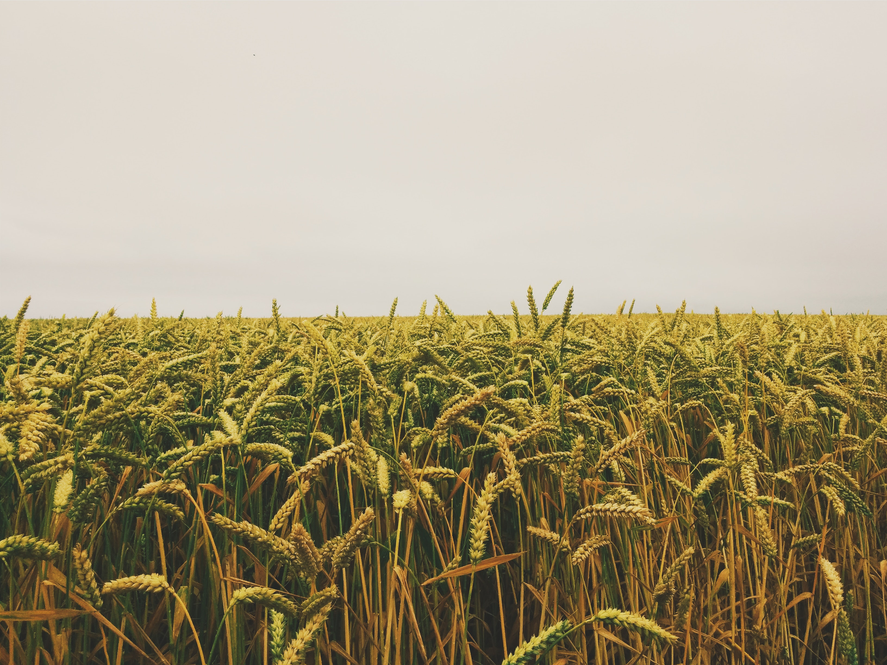

Hey,
I'm Paras Dubey
Civil Engineer &
Web Developer
I'm Paras Dubey
Civil Engineer &
Web Developer
Skills
HTML
CSS
JavaScript
PHP
Git
GitHub
AutoCAD
Revit
Python
C++
Projects

Task Manager
A task management web application that allows users to organize their tasks and set deadlines. It provides a clean and intuitive interface to manage daily tasks efficiently.
Visit ProjectPortfolio
A personal portfolio website showcasing my projects, skills, and experiences. It is designed to provide an overview of my work and skills in a visually appealing manner.
Visit Project

Crop Prediction using ML
An application that predicts the best crop to grow in a given region based on various environmental factors and historical data. It helps farmers make informed decisions for better agricultural productivity.
Visit Project